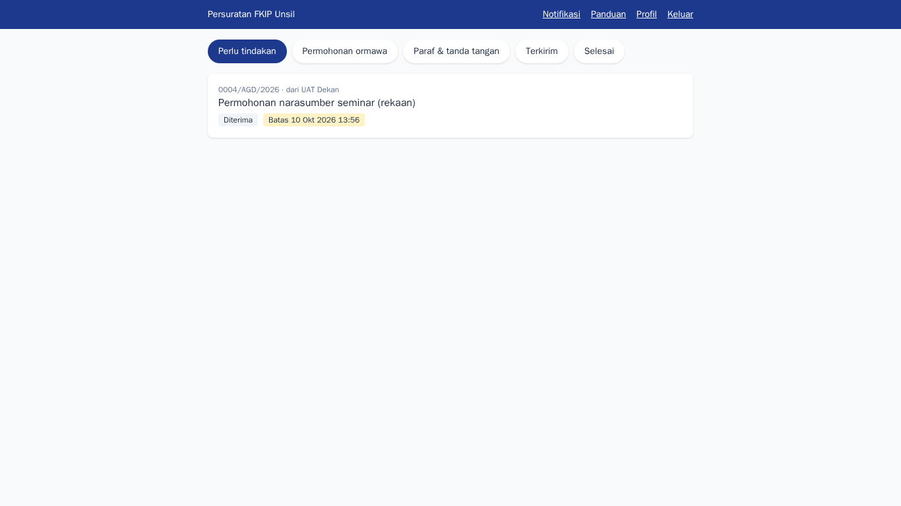
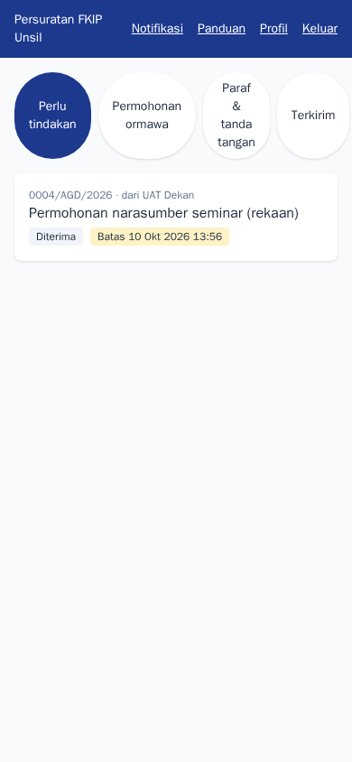
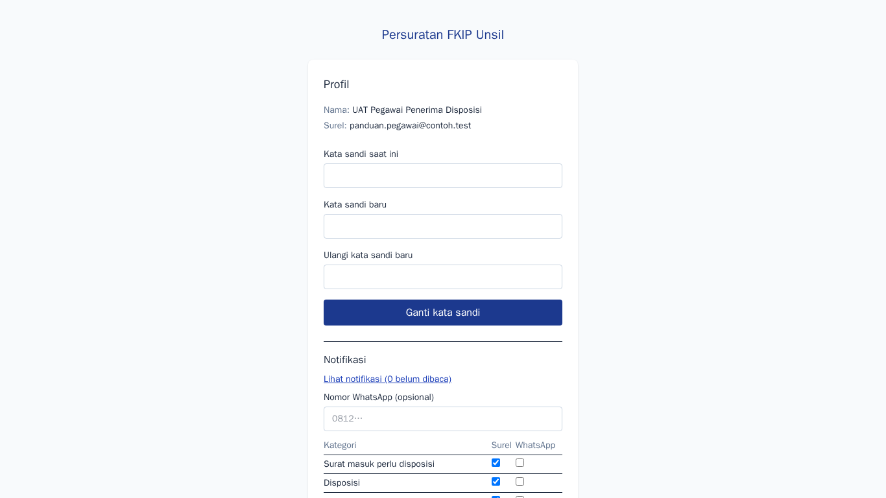

Pegawai penerima disposisi
Tujuan
Menerima dan menindaklanjuti disposisi surat dari pimpinan, lalu melaporkan hasilnya.
Cara masuk
Admin membuatkan akun. Masuk lewat Masuk; Anda diarahkan ke kotak masuk disposisi.
Langkah-langkah
- Kotak masuk disposisi
Daftar disposisi untuk Anda lengkap dengan instruksi, batas waktu, dan status. Membuka disposisi menandainya dibaca.
Langkah 1 — Kotak masuk disposisi - Dari ponsel
Tampilan menyesuaikan layar kecil sehingga disposisi dapat ditindaklanjuti dari ponsel.
Langkah 2 — Dari ponsel - Notifikasi
Disposisi baru dan pengingat batas waktu tercatat di sini dan dikirim ke surel.
Langkah 3 — Notifikasi - Akun dan preferensi
Atur kanal notifikasi dan ganti kata sandi.
Langkah 4 — Akun dan preferensi
Tanya jawab
Bagaimana melaporkan hasil?
Buka disposisi, isi laporan tindak lanjut, lalu Selesaikan. Pemberi disposisi diberi tahu.
Surat rahasia tidak terbuka.
Surat rahasia hanya terbuka bagi dekan dan penerima disposisinya; pastikan disposisi ditujukan kepada akun Anda.